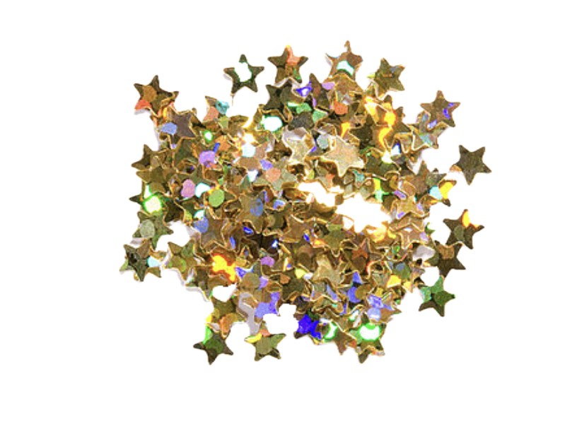
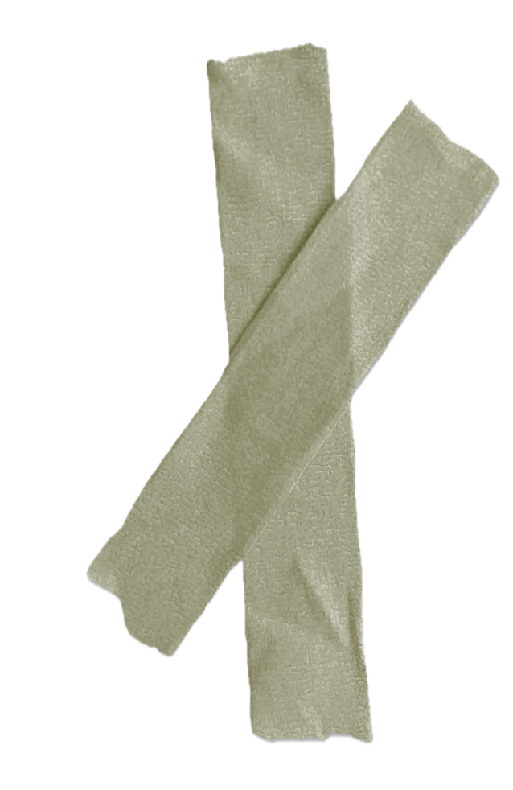
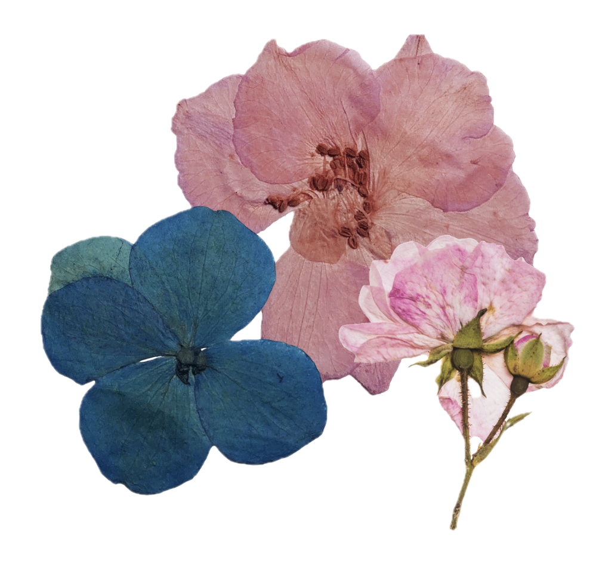
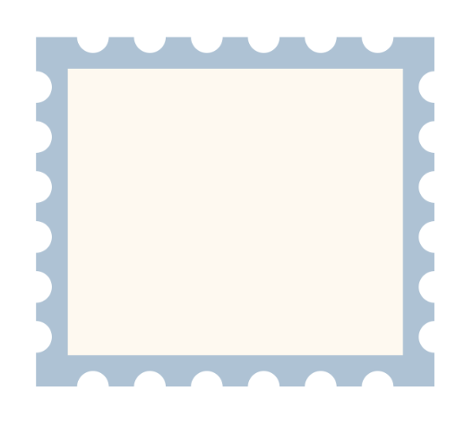
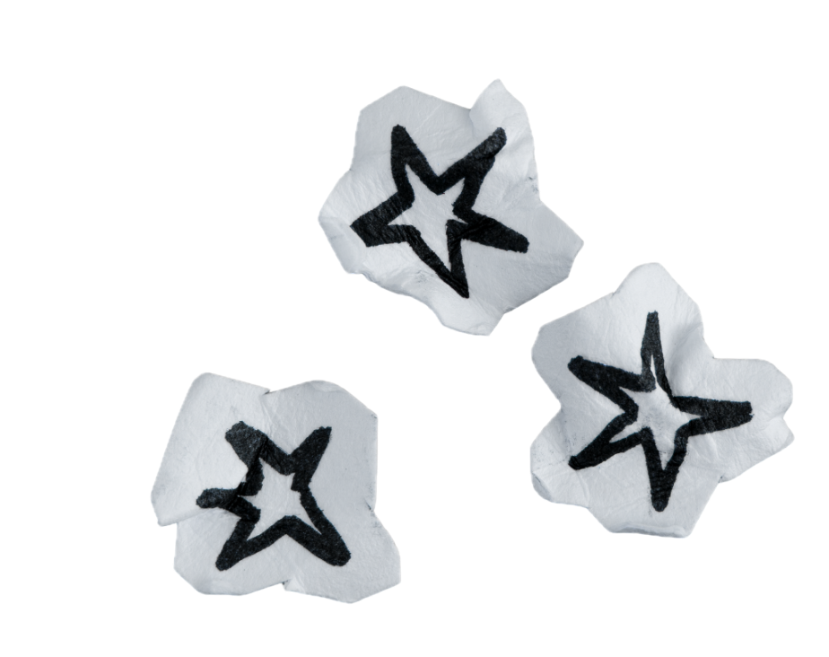

enter
my digital scrapbook
A collection of projects about place, culture, play, and trying to get my life together.
This portfolio is like a scrapbook of my work. Each project represents a different side of me: my student side, my cultural side, my playful side, and my very real procrastinating side.
Click each note to see what this class helped me understand.
I learned that sound is not just background decoration. It can guide the mood, make interactions feel more alive, and help the user understand what is happening.
I learned how small transitions can make a website feel smoother. A delay, fade, hover, or stamp animation can make the experience feel more intentional instead of just clicking from one page to another.
I learned that video can be interactive, not just something people watch. It can become part of the story when the viewer has choices and control.
I learned that coding is also a way of telling a story. The layout, colors, buttons, and interactions all say something about me and the kind of experience I want people to have.
Click a card to open it and collect a side ♡
This shows my student side: turning campus into something easier and more fun to explore.
enter projectThis reflects my cultural side: home, memory, and everyday traditions.
enter projectThis is my playful side: storytelling, games, and interactive ideas.
enter projectThis is my realistic side: struggling with time, distraction, and trying to improve.
enter projectcollected